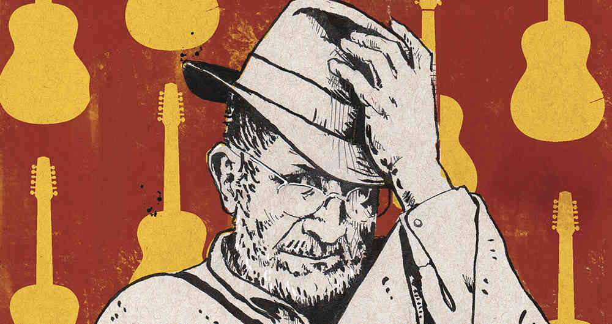

¿como nacio este genero?
Historia

La carranga nació a finales de los años 70 en el corazón de Boyacá, Colombia, cuando el músico Jorge Velosa, impulsado por el deseo de rescatar el orgullo del campesinado andino, decidió fusionar ritmos tradicionales como el merengue campesino, la rumba criolla y el torbellino en un sonido completamente nuevo.
Acompañado por el compás acústico del requinto, el tiple, la guitarra y la guacharaca, este género se convirtió en el cronista de la vida en el campo; a través de letras repletas de coplas, humor, picardía y un profundo respeto por la naturaleza, narró historias cotidianas que, como la icónica canción "La cucharita", conmovieron al país entero